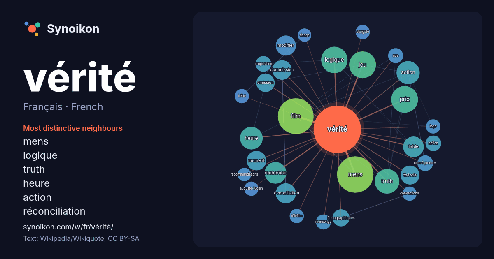

Français · French · popular word
vérité
“truth” · The words found around it in 1351 instances from French Wikipedia, Wikiquote.

Most distinctive neighbours
- mens 60×
- logique 28×
- truth 28×
- heure 21×
- action 20×
- réconciliation 18×
- modifier 18×
- table 16×
- film 15×
- jeu 14×
- filmographiques 14×
- émission 14×
- prix 13×
- recherche 12×
- commission 11×
- théorie 11×
- moment 11×
- nue 11×
- mensonge 11×
- proposition 10×
× = how many times more often than in general French Wikipedia text.
Most frequent neighbours
- mens 59
- film 57
- jeu 32
- prix 32
- logique 31
- truth 27
- action 24
- heure 23
- série 23
- recherche 21
- français 20
- table 19
- modifier 18
- réconciliation 18
- commission 17
- historique 17
- moment 17
- théorie 16
- émission 15
- filmographiques 13
In context
- Pour les articles homonymes, voir Vérité (homonymie). La vérité (du latin veritas, « vérité », dérivé de verus, « vrai ») est la correspondance entre Wikipedia snippets · Vérité
- Leur vérité Pour plus de détails, voir Fiche technique et Distribution. Leur vérité (en espagnol : Los creyentes) est un thriller psychologique espagnol Wikipedia snippets · Leur vérité
- articles homonymes, voir Table (homonymie). Une table de vérité (parfois appelée fonction de vérité) est la méthode utilisée en logique classique — en particulier Wikipedia snippets · Table de vérité
- nommé Sourcier de Vérité, va devoir se lancer dans une quête dont dépendra le sort de l'humanité, brandissant au poing l'Épée de Vérité, arme magique et Wikipedia snippets · L'Épée de vérité
- La Vérité si je mens ! Série La Vérité si je mens ! Pour plus de détails, voir Fiche technique et Distribution. La Vérité si je mens ! est un film français Wikipedia snippets · La Vérité si je mens !
- recommandations des projets correspondants. La Journée nationale de la vérité et de la réconciliation est, au Canada, un jour férié fédéral célébré le Wikipedia snippets · Journée nationale de la vérité et de la réconciliation
- Pour les articles homonymes, voir Vérité (homonymie). Une vérité scientifique est une proposition construite par un raisonnement rigoureux, et vérifiée Wikipedia snippets · Vérité scientifique
- Pitaka. La première noble vérité: « Idaṃ dukkhaṃ ariyasaccan’ti — pariññeyyan’ti me — pariññātan’ti » «Ceci est la noble vérité de l'insatisfaction - elle Wikipedia snippets · Quatre nobles vérités
More French words
- art
- automne
- carte
- chanson
- chat
- chemin
- cheval
- chien
- climat
- cloche
- cœur
- dieu
- désert
- eau
- famille
- forêt
- histoire
- hiver
- horloge
- jardin
- langue
- miel
- miroir
- monnaie
- montagne
- mort
- mère
- nature
- nourriture
- ombre
- pain
- pluie
- pont
- pouvoir
- printemps
- santé
- science
- sel
- silence
- temps
- tempête
- thé
- train
- travail
- trésor
- vie
- ville
- étoile
- île
Precomputed on 2026-10-09 with default settings (±5 words, medium corpus). The interactive map can refresh it with live data.